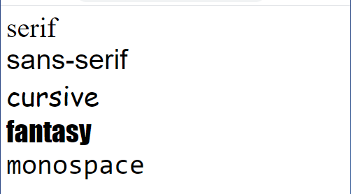

CSS (Cascading Style Sheets) is the code that styles web content.
CSS basics walks through what you need to get started.
We'll answer questions like;
How do I make content display at a certain location in the (webpage) layout?
How do I decorate my webpage with background images and colors?
CSS is a style sheet language. CSS is what you use to selectively style HTML elements.

Selector: HTML element that you want to modify.
Property: The element’s css property you want to modify for example color, spacing.
Value: The new value of the css property like red for its color.
CSS is used to define styles for your web pages, including the design,
layout and variations in display for different devices and screen sizes.
For example;
p {
color:aliceblue;
}
For the code to work, we still need to apply this CSS (above) to your HTML document.
Otherwise, the styling won't change the appearance of the HTML.
You can also select multiple elements.
Separate multiple selectors by commas. For example:
p, h1, li {
color:green;
}
They are used to find html elements you want to modify.
To select an element with a specific id, write a hash (#) character, followed by the id of the element.
#one {
color:green;
}
The class selector selects HTML elements with a specific class attribute.
To select elements with a specific class, write a period (.) character, followed by the class name.
.two {
color:green;
}
we use the font-family property to specify the font of a text.
Font Families
